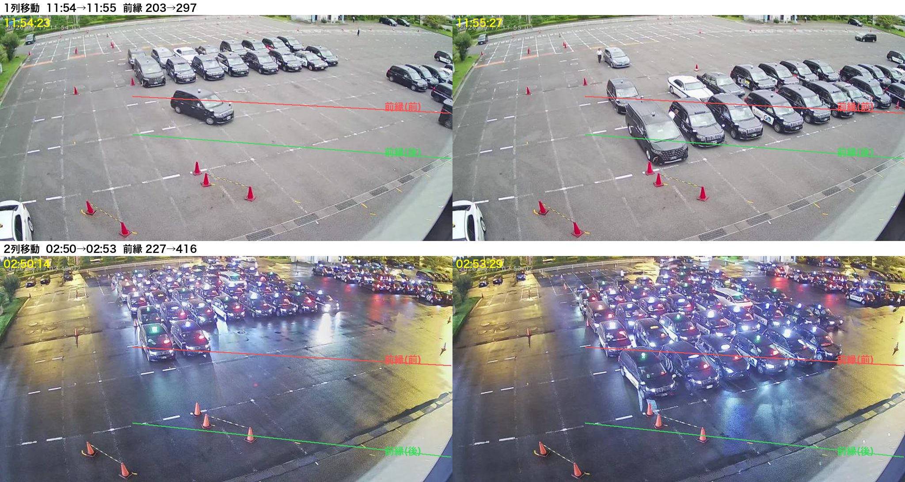
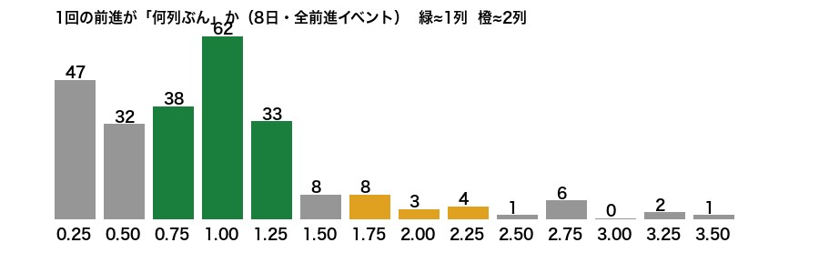
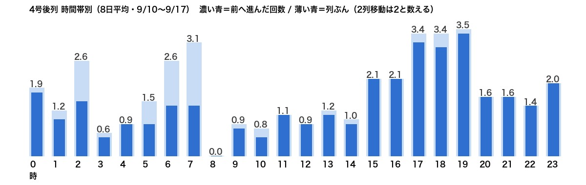
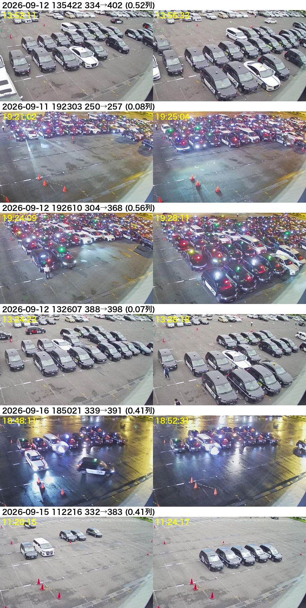
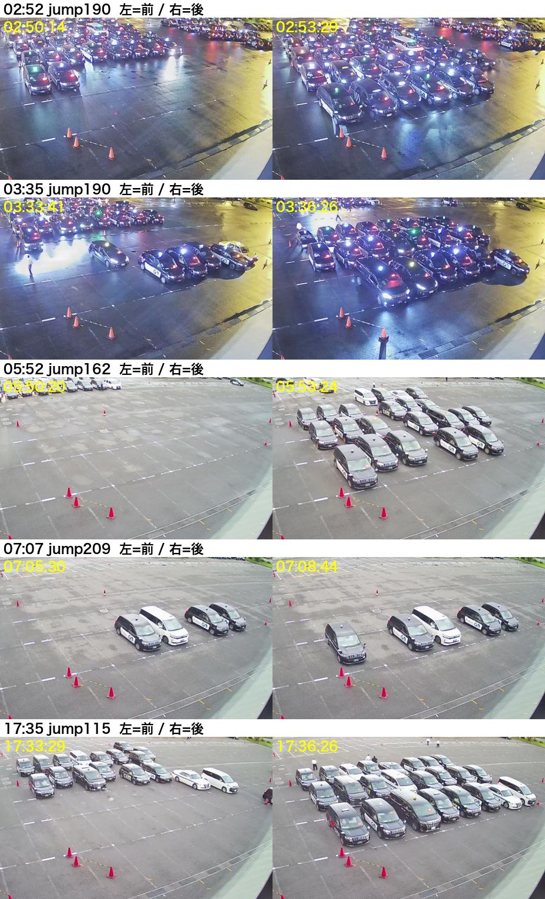

4号 列移動を24時間×8日で研究した（2026-09-18）
9/10〜9/17 の奥カメラ画像（1分おき・約1.1万枚）で、列1（前の横一列）の前縁を追い、「いつ・何列ぶん」動くかを見た。
① 1列移動と2列移動は、確かに両方ある

上：昼の1列移動（前縁が1台ぶん前へ）。下：深夜の2列移動（前縁が2台ぶん前へ、コーンの手前線まで）。赤線＝動く前の前縁、緑線＝動いた後の前縁。
② 何列ぶん動いたか（8日・前進279回）

1列 ≈ 133回、2列 ≈ 23回、3列以上 ≈ 10回。列の長さは「奥行きの見え方（遠いほど縮む）」を直してから測っている。
左端の「0.25〜0.5列」（79回）は要注意。中身を見ると（④）、本物の前進を小さく測ってしまったものと、車1台の出入りだけのノイズが混ざっている。
③ いつ動くか（8日平均・時間帯別）

- 夕方17〜19時が最多（1時間に約3.4列ぶん）。
- 深夜2時・朝6〜7時は「2列移動」が多い（濃い青と薄い青の差が大きい）＝前列が2列まとめて出てから塊が2列ぶん進む。
- 8時台は塊がほぼ無い（ゼロ）。
| 日 | 前進回数 | 列ぶん合計 | 1列 | 2列 | 3列+ | 前列が出た回数 |
|---|---|---|---|---|---|---|
| 9/10(昼〜) | 33 | 36 | 30 | 3 | 0 | 42 |
| 9/11 | 35 | 43 | 30 | 3 | 2 | 45 |
| 9/12 | 34 | 42 | 29 | 3 | 2 | 48 |
| 9/13 | 31 | 38 | 27 | 2 | 2 | 43 |
| 9/14 | 38 | 43 | 35 | 2 | 1 | 45 |
| 9/15 | 29 | 34 | 25 | 3 | 1 | 27 |
| 9/16 | 46 | 55 | 40 | 3 | 3 | 46 |
| 9/17 | 33 | 41 | 27 | 4 | 2 | 48 |
※「1列」には②の小さい山（0.25〜0.5）も1として含む。今の箱の記録は同じ期間で1日3〜23回。
④ 今の追い方の弱点（小さく測ってしまう例）

「0.5列以下」と出た6件。1段目・3段目・6段目は本当は1列進んでいる（前列が半分出た状態から測り始めたため小さく出た）。2段目・4段目は車1台の動きだけ（ノイズ）。5段目は前列に横から入った車。
原因：「いちばん前の車の位置」だけを見ているので、前列が途中まで出ている瞬間や、車1台の出入りに引きずられる。
⑤ 夜も追える（ただし要注意）

深夜〜朝の大きな前進4件と夕方1件。行灯とヘッドライトで輪郭は取れる。2段目（03:35）は塊が奥から一気に前へ。4段目（07:07）は4台だけの小さな塊＝線が少ししか当たらず測り方が不安定。
⑥ 正しく測るには（提案）
- 目盛り：奥行きは「1÷(画面の高さ+200)」で地面の距離に直す。1列＝0.0004（昼の1列移動で較正済み）。
- ずれ量：塊の並び（7本の奥行き線を合わせたもの）を前後の写真で重ね合わせ（ずらして一番合う位置）、列ぶんで出す。
- 数え方：3分以内に合計0.75列以上ずれたら「列移動」。列数は四捨五入（1/2/3）。2分続いたら確定。
- 前列が出た合図：前縁が奥へ下がった時。あなたの定義「出る→進む」の対はこれで組む。
- 夜：同じ方式で動く見込み。ヘッドライトの一過性は「2分続く」条件で落とす。
- 静止物：側溝の格子・コーン・白線は1日の最小エッジで消す（今は右端2本の線で消し切れていない→直す）。
⑦ 実装した（Aで承認・2026-09-18 11:42 稼働開始）
やり方は⑥の「前縁追跡」を土台に、谷（前列が出て一番奥に下がった位置）→台（進んだ後に落ち着いた位置）の距離を行数に直す方式にした。塊ぜんぶの重ね合わせ方式も試したが、奥から車が入ってくると距離がぶれるため、前縁方式のほうが目視と合った。
- 目視 16/20 一致。外れた4件は「車1〜2台だけ」「通過車」「空の駐車場の反射」→ 塊が小さい時と、台が落ち着かない時は数えない、というふるいを足した。
- ふるい後の8日：列移動 23〜31回/日、列ぶん 28〜43/日（1列 150・2列 48・3列 19）。今の箱の記録は 3〜23回/日だった。
- Mac mini に組み込み済み：5分ごとに1分おきの画像を追い、4号の「列移動」はこの値になる（1〜3号はこれまでどおり）。9/10〜9/17 の過去分も置き換え済み。
- 残り：深夜の目視は5件（4件OK）。1週間動かして、夜の数字を再確認する。
| 日 | 列移動 | 列ぶん | 1列 | 2列 | 3列 | 旧・箱の記録 |
|---|---|---|---|---|---|---|
| 9/10 | 28 | 41 | 17 | 9 | 2 | 7 |
| 9/11 | 28 | 40 | 18 | 8 | 2 | 6 |
| 9/12 | 29 | 38 | 23 | 3 | 3 | 15 |
| 9/13 | 23 | 28 | 20 | 1 | 2 | 23 |
| 9/14 | 29 | 39 | 19 | 10 | 0 | 13 |
| 9/15 | 23 | 33 | 16 | 4 | 3 | 11 |
| 9/16 | 31 | 43 | 23 | 4 | 4 | 9 |
| 9/17 | 26 | 41 | 14 | 9 | 3 | 3 |